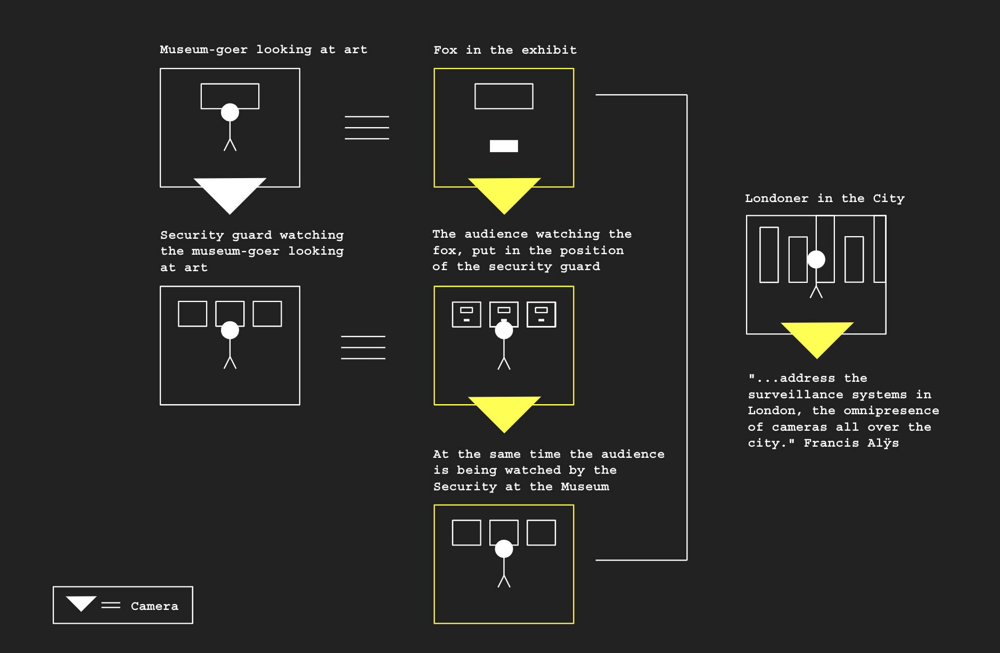

November 17th, 2018
To-Do: Methodology
Also inspired by The Nightwatch Francis Alÿs London, 2004.
Visit for video: francisalys.com/the-nightwatch/
Diagram of it's function:
Inspired by this methodology, this lead me to the concept of putting people in someone else's position, like Alÿs did.
Using these this methodology I will address personal lists, to-do lists.